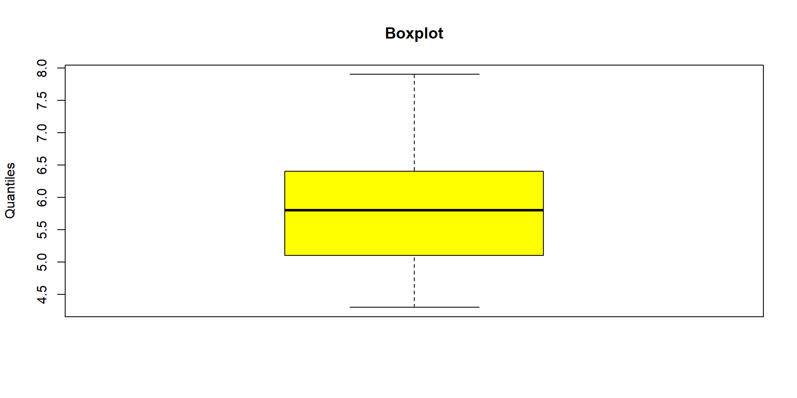

Statistics and data analysis
Organization
| S2 | S3 | S4 | S5 | |
|---|---|---|---|---|
| Lectures | 8 (12h) | 8 (12h) | 8 (12h) | 8 (12h) |
| Tutorials | 8 (12h) | 8 (12h) | 8 (12h) | 8 (12h) |
| tot. | 16 (24h) | 16 (24h) | 16 (24h) | 16 (24h) |
https://ant0in3g.github.io/sTa7.html \(\to\) look at your stickers !
Evaluations
For each semester :
- One mid-semester exam (1h30)
- One final exam (1h30)
For semester 2, 4 and 6 only, a group statistics project
Group projets
- Semester 2 :
- Semester 4 :
- Semester 6 :
Resources
Part 1 - Introduction to statistics and/with R
Data : interesting \(\to\) they help us understand the world !
Statistics : fundamental in science \(\to\) needed in the design, analysis, and interpretation of experiments !
Chapter 1 - A brief intro to R

- Free open source language
- Built to do statistics
- Updated by the mathematician from all over the world
- Amazing graphics !
- Widely used in biology, agronomy, economy, …
Learn it, love it, use it !
Installation of R and RStudio
TO DO for next class !
Using RStudio

Good habits
- create a project on RStudio
- create ALWAYS 4 folders :
data_rawdataimgdoc
- Use the
helpfunction ! … and alsochat GPT…
WARNING ! It often writes code wayyyy too complicated !
Import DATA into RStudio
Data used for this class : data1 and data2
- Import data from a csv file
- Import data from an excel file
- Possible to import data from many more file formats …
\(\to\) NOW “doing statistics” can get started !
Chapter 2 - General framework

What we are going to learn :
- Descriptive Statistics
- Probability theory
- Sample theory
- Inferential Statistics
Statistical Variables
A variable \(X\) \(\to\) any characteristic observed in a study
The data values that we observe for a variable are called observations
- Unit : A member of a population
- Population : The collection of all individuals and units that we want to know more about
- Sample : The subset of the population we observe
- Modality : The distinct values or categories that the variable can take
For instance
Variable : Grade in Statistics of ISTOM’s Students
Observations : \(18,14,16,11,12,15, \ldots\)
- Unit : the single student
- Population : all students of ISTOM
- Sample : a class
- Modality : 0 : 20
Types of variables
- Qualitative (Categorical)
- Nominal
- Ordinal
- Quantitative (Numerical)
- Discrete
- Continuous
Qualitative / Categorical Variable
A variable is called qualitative if each observation belongs to one of a set of distinct categories
Nominal : Categories are disconnected.
Examples : Hair Color, Animal Species, …
Ordinal: Categories are ranked
Examples : Level of Education, …
Quantitative / Numerical Variable
A variable is called quantitative if observations on it take numerical values that represent different magnitudes of the variable
- Discrete : the variable assume values in a countable set (“how many”)
Examples : Number of episode in a series, Grades, …
- Continuous : the variable assume values in a continuous set (“how much”)
Examples : Time, most physical measurements, …
Illustration with a cool dataset in R \(\to\) iris
It contains 150 observations for 5 variables
Sepal.Length Sepal.Width Petal.Length Petal.Width Species
1 5.1 3.5 1.4 0.2 setosa
2 4.9 3.0 1.4 0.2 setosa
3 4.7 3.2 1.3 0.2 setosa
4 4.6 3.1 1.5 0.2 setosa
5 5.0 3.6 1.4 0.2 setosa
6 5.4 3.9 1.7 0.4 setosa
We have :
- 4 quantitative variables
- 1 qualitative variable
Chapter 3 - Descriptive statistics
Before making statistical tests with your data it is essential to examine all your variables !
Why ? To “listen” to the data :
- to catch mistakes
- to see patterns in the data
- to find violations of statistical assumptions
- to generate hypotheses
- … and because if you don’t, you will have trouble later !
Numerical Summaries of Data
- Central Tendency measures. They are computed to give a “center” around which the measurements in the data are distributed.
- Variation or Variability measures. They describe “data spread” or how far away the measurements are from the center.
- Relative Standing measures. They describe the relative position of specific measurements in the data.
Mean(s)
The Mean
To calculate the average \(\overline{X}\) of a set of observations, add their value and divide by the number of observations
\[ \overline{x}=\frac{X_1+X_2+X_3+\ldots+X_n}{n}=\frac{1}{n} \sum_{i=1}^n x_i \]
Other mean
Weighted mean : \(\quad\quad\overline{X}=\dfrac{\sum_{i=1}^n w_i X_i}{\sum_{i=1}^n w_i}\)
Geometric mean : \(\quad\quad\overline{X}=\left(\prod_{i=1}^n X_i\right)^{\frac{1}{n}}\)
Harmonic mean : \(\quad\quad\overline{X}=\frac{n}{\sum_{i=1}^n \frac{1}{X_i}}\)
Median
- Median : the exact middle value
- Calculation :
- If there are an odd number of observations, find the middle value
- If there are an even number of observations, find the middle two values and average them
Example : \(17, 19, 21, 22, 23, 23, 23, 38\). The Median is \[\dfrac{22+23}{2}=22.5\]
Which Location Measure Is Best ?
- Mean is best for symmetric distributions without outliers
- Median is useful for skewed distributions or data with outliers
Variance
Average of squared deviations of values from the mean
\[ \sigma^2=\dfrac{\sum_i^n\left(x_i-\bar{x}\right)^2}{n-1} \]
- Absolute values do not have nice mathematical properties
- Squares eliminate the negatives
Standard deviations are simply the square root of the variance
Interesting Result
Regardless of how the data are distributed, \(75\%\) of values fall within \(\sigma\) from the mean !

Univariate statistics
Going back with the dataset iris
To get a global view
Sepal.Length Sepal.Width Petal.Length Petal.Width
Min. :4.300 Min. :2.000 Min. :1.000 Min. :0.100
1st Qu.:5.100 1st Qu.:2.800 1st Qu.:1.600 1st Qu.:0.300
Median :5.800 Median :3.000 Median :4.350 Median :1.300
Mean :5.843 Mean :3.057 Mean :3.758 Mean :1.199
3rd Qu.:6.400 3rd Qu.:3.300 3rd Qu.:5.100 3rd Qu.:1.800
Max. :7.900 Max. :4.400 Max. :6.900 Max. :2.500
Species
setosa :50
versicolor:50
virginica :50
Graphic Representations
Now let’s look the qualitative variable Species
Bivariate statistics
coming.
Part 2 - Probability
Chapter 1 - Randomnes
Random experiment
An experiment is called random if
- it can be repeated
- it has several possible outcomes
- whose outcome is unpredictable
Examples:
- rolling a six-sided die
- observing the disease status of a plant
Elementary Event
An elementary event is a result of a random experiment.
Examples:
- Getting a 3 when rolling a 6-sided die
- Observing a plant being sick
Sample Space
The Sample space (denoted by \(\Omega\)) is the set of all possible outcomes (elementary events) of a random experiment.
Example :
- Rolling a 6-sided die, \(\Omega = \left\{1, 2, 3, 4, 5, 6 \right\}\)
Property of a Sample Space
A Sample Space \(\Omega\) can be :
- a finite set
- a countably infinite set
- an uncountably infinite set
Note :
- \(\Omega\) is discrete : finite or countably infinite
- \(\Omega\) is continuous : uncountably infinite
Event (Non-Elementary)
A (Non-Elementary) Event is subset of \(\Omega\).
Example :
\(\to\) Event A : “Getting a result strictly greater than 4 when rolling a 6-sided die”
\(\to\) A=\(\{5,6\}\)
Particular events
- The event \(\Omega\) is certain
- The empty set \(\emptyset\) is an impossible event